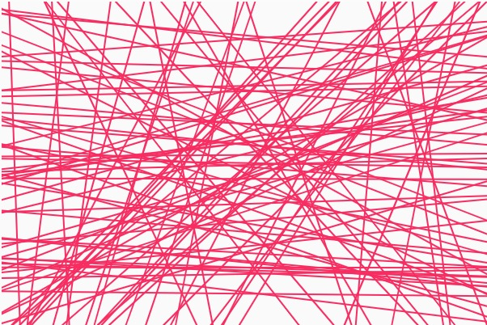
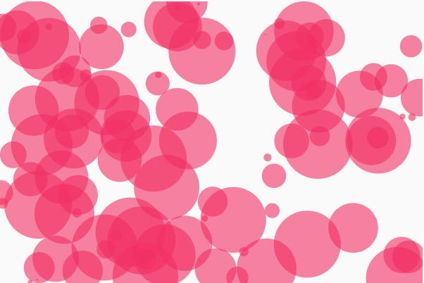

hi5cc
Introduction to
Creative Coding
day 6
Karan Dudeja, Dec 2020
Srishti Manipal Institute of Art, Design and Technology
Interim 2020
Polar Coordinates
A new way of thinking about the coordinate system
Basic; any point has a (x,y)
- X coordinate = Radius * cos(angle) cos(theta) = adjacent / hypotenuse
- Y coordinate = Radius * sin(angle) sin(theta) = adjacent / hypotenuse
📒Polar Coordinates
📒sin
📒cos
Try it here
🚴
Activity 2.1
Submission details on the Blog
On THREE canvases with dimensions 400 x 400


- Sketch 1. Will have an output similar to the left image
- Sketch 2. Will have an output similar to the right image
- Sketch 1 and 2, both have 2 modes i.e. on every alternate click on the canvas, colors switch between random colors or a new color.
- Sketch 3. This one spirals from the center, made up of dots with a diameter of 4 each